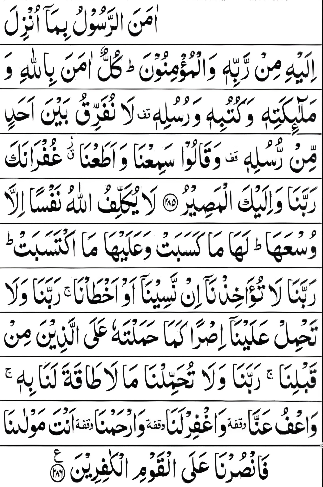

বাকারার শেষ দুই আয়াত
“যে ব্যক্তি রাতে সুরা বাকারার শেষ দুই আয়াত তিলাওয়াত করবে, তা তাকে (অনিষ্ট থেকে) হিফাজত করবে।”(সহিহ বুখারি: ৪০০৮)

উচ্চারণ: আমানার রসূলু বিমা উংঝিলা ইলাইহি মির রাব্বিহি ওয়াল মু’মিনুন। কুল্লুন আমানা বিল্লাহি ওয়া মালা-ইকাতিহি ওয়া কুতুবিহি ওয়া রুসুলিহ। লা-নুফাররিকু বাইনা আহাদিম মির রুসুলিহ। ওয়া কলু সামি‘না ওয়া ওয়াতনা গুফরনাকা রাব্বানা ওয়া ইলাইকাল মাসির। লা ইউকাল্লিফুল্লাহু নাফসান ইল্লা উস‘আহা লাহা মা কাসাবাত ওয়া আলাইহা মাকতাসাবাত রাব্বানা লা তুআখিজনা ইন-নাসীনা আও আখত্ব’না রাব্বানা ওয়ালা তাহমিল আলাইনা ইসরং কামা হামালতাহু আলাল্লাজীনা মিং ক্ববলিনা রব্বানা ওয়ালা তুহাম্মিলনা মা লা ত্ব-ক্বতালানা বিহ্। ওয়া’ফু আন্না ওয়াগফিরলানা ওয়ারহামনা আংতা মাওলানা ফাংসুরনা আলাল ক্বওমিল কাফিরীন।